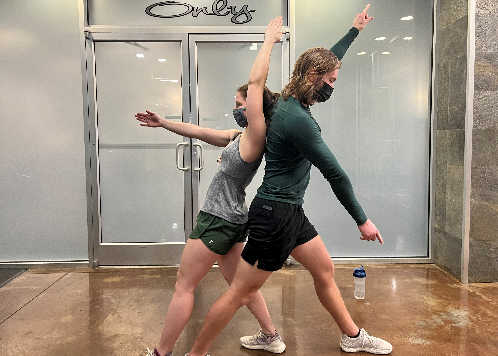
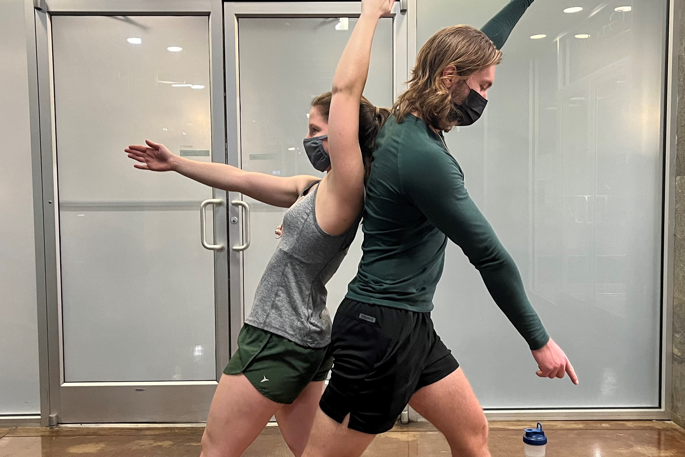
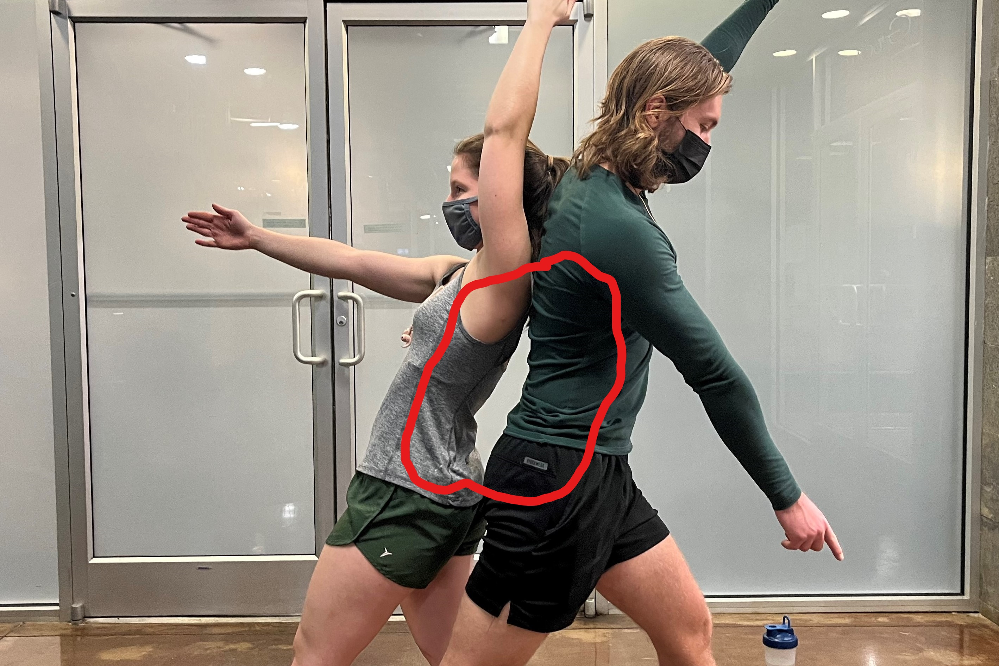
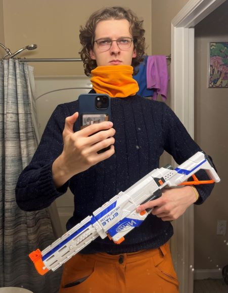

Now, get a load of this guy

No seriously, look closer

One last chance before I give it away

Those who are perceptive may have noticed that this one guy is actually composed of two, smaller guys.
Meet Kyle and Neck.
They may look intimidating, but don't worry; I'm gonna give you everything I know about their weaknesses so you'll be prepared
if you come across them.
Kyle
| Strengths |
Weaknesses |
|
Punching bears. Seriously: do not ride a bear into battle against him. He will punch it dead. I have tried.
|
His calves. Not that his calves are weak, but he is self conscious about them. Invoke their name and he will be paralyzed for a few seconds (this may help get the upper hand)
|
|
Eating your eyes.
|
Becomes a distraction for Neck if his back is turned towards him. This will daze Neck for a few seconds,
but its effects have diminishing returns.
|
|
Overall kind of a meany. Don't take what he says to heart.
|
Pacified by Pumpkins Scream in the Dead of Night by Ga$p. Whenever it is played, Kyle must stop his actions and begin planking for the
duration of the song. This acts as a distraction and weakens him.
|
Neck
| Strengths |
Weaknesses |
|
Banshee war cry. You're gonna want to bring some earmuffs or you're sure to get immediate hearing damage.
This puts these two at a major advantage because you can no longer hear their movements.
|
Neck foolishly let his hair grow out. It may not be respectful, but take advantage of pulling his hair at every opportunity.
|
|
Spatial blink. You need to listen for if Neck invokes his spatial blink. He can teleport short distances (by my measure up to 10 ft)
but this tactic is given away by the shrill "aroo" he has to bleat out to perform it.
|
Every 2 minutes Neck must consume three chicken breasts or revert to a puny form of hisself. If you can starve him at this two
minute mark, he may easily be dispatched. He becomes feral at the 1:55 mark though, so I have never been able to accomlish this.
|
General Strategy
I recommend starting any encounter with Pumpkins Scream in the Dead of Night, which will
render him distracted until Neck can be starved. This also has the benefit of turning Kyle's back
to Neck, stunning Neck for a brief period. If Neck is not starved then hope is lost, but
Kyle is a relatively easy target to take one-on-one.
General Strategy
It is imperitive at all costs to render him puny by starving him two minutes. However, no
paralysis effects work when he is in his feral state. I have been unable to starve him for long
enough to do any real damage. His banshee cry and blink abilities synergize against you. If
you prepare with ear muffs, you will not be able to hear his "aroo". I have not found a way
to counter this. Use methods of distraction to get him to the 1:55 mark, then do what you
can to last 5 more seconds.
Lastly, when they detect they are in a losing situation (which I have only accomplished two times in years of tracking them), they will employ
a intimidation technique: releasing their hellhound. This is a test of character; He will read your soul and judge every decision you have made until that point.
If you are deemed unworthy, I am unable to assist you. Be prepared to fight harder than you ever have for your life. I know of no survivors.
Why am I hunting these clowns?
As you can see, these two guys form a powerful team out in the wild. I've been hunting them for years, but I barely get away every time I try.
I'd like to say I have some profound, god-blessed reason for hunting these two, but the truth is simple: I just don't like them very much.
Our story started three years ago when we were all on a scientific expedition in Antarctica. We were studying the effects of espresso beans on the
local fauna, i.e. how many espresso beans can a polar bear realistically take before going down? Unfortunately, our results were regularly disrupted
by Kyle punching the bears dead. But that wasn't what made me not like them.
No siree Bob. The truth is they beat me at Settlers of Catan; And for that, their punishment
is death.
Good Luck, Soldier!
